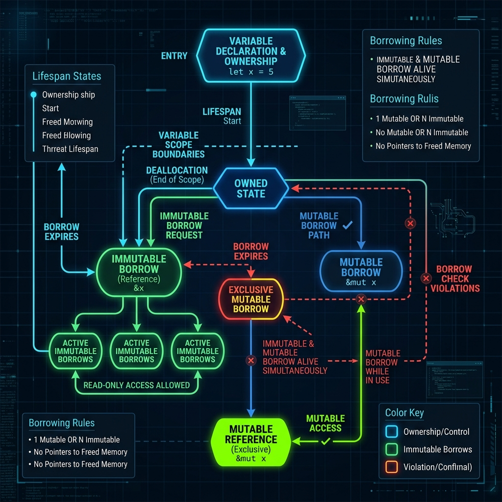

Série: Blindagem de Sistemas — Módulo 03
O Cinto de Segurança do Rust: Garantias do Compilador

Nota do Desenvolvedor: O caso a seguir representa uma simulação prática de engenharia com base em ameaças e ocorrências reais do ecossistema corporativo.
1. O Incidente: O Módulo de Autenticação com Sangramento de RAM
Imagine o vazamento de memória virtual (Memory Leak) como um balde d'água furado: a cada requisição de login que falhava devido a tokens expirados, o sistema perdia uma única gota de memória RAM no Heap que ficava retida e esquecida. Sob tráfego de dados de alta concorrência contínuo de produção, em exatas 48 horas o balde transbordava e esgotava os recursos físicos da máquina, forçando a equipe de operações a reiniciar os pods do cluster Kubernetes.
O diagnóstico apontava para um gerenciador de conexões em C++ que, em caminhos de exceção complexos, omitia a liberação do objeto do usuário da memória. Tentativas de correção manual geravam receio de quebras colaterais em produção. A decisão de engenharia foi cirúrgica: isolar o microsserviço de autenticação e reescrever seu núcleo crítico utilizando Rust. Rust foi escolhida especificamente porque elimina classes inteiras de bugs e vulnerabilidades de memória que C++ permite no Heap, especialmente em fluxos de tratamento de exceção de dados complexos.
"Executivos costumam me perguntar por que a migração para Rust vale a pena. Eu explico: programar em C/C++ é como dirigir sem cinto de segurança a 200 km/h: é rápido até você encontrar um muro na pista. O compilador do Rust te obriga a colocar o cinto, ajustar os retrovisores e fazer o bafômetro antes de dar a partida. O carro pode até demorar um pouco mais para sair da garagem por conta da rigidez de compilação, mas ele definitivamente não explode no meio da estrada."
2. O Diagnóstico: O Paradigma de Ownership do Rust

Para simplificar, pense no conceito de Ownership (Propriedade) como a chave física de um cofre de segurança: apenas uma pessoa pode segurá-la de cada vez. Se você entrega a chave para outro colega de equipe (Move), você perde o acesso total ao cofre instantaneamente. E assim que o último dono da chave sai do prédio (fim do escopo), o cofre e seus dados são automaticamente destruídos. Rust elimina classes inteiras de bugs de memória em tempo de compilação sem necessitar de um Garbage Collector. Esse feito é alcançado através de três regras fundamentais de propriedade:
- Cada valor em Rust tem um proprietário único: Uma única variável possui os direitos de gerenciar aquele recurso de memória no Heap por vez.
- Apenas um proprietário por vez: Quando você passa uma variável para outra função ou objeto, a propriedade é movida (Move). O acesso da variável antiga é imediatamente bloqueado.
- Escopo limpo (Drop): Quando o proprietário sai do escopo da execução, a memória associada é limpa de forma determinística na hora.
Se o código tentar compartilhar recursos simultaneamente de forma insegura (criando data races ou abrindo caminhos para double-free), o Borrow Checker impede a compilação do software, exigindo que o engenheiro estruture referências explícitas (imutáveis ou apenas uma mutável por vez).
// Exemplo de erro interceptado pelo Borrow Checker:
let mut x = 10;
let y = &mut x; // Ok, primeiro empréstimo mutável ativo
let z = &mut x; // ERRO EM TEMPO DE COMPILAÇÃO! Não é permitido ter outro empréstimo mutável simultâneo.3. Mitigação: Re-engenheirando com Segurança
A substituição do serviço antigo por Rust foi conduzida com foco em isolamento absoluto do estado mutável:
- Borrowing controlado: Utilizar referências imutáveis temporárias (
&T) para ler os tokens de login sem perder ou transferir a propriedade dos dados primários da requisição.fn autenticar(req: &LoginRequest) { let token = req.token.as_ref(); // Borrowing imutável temporário if token.expirado() { return; // Memória limpa automaticamente e com segurança ao sair do escopo (Drop) } } - Evitar Unsafe: Manter o código 100% livre do bloco especial
unsafe, permitindo que a própria linguagem seja a fiadora da saúde e estabilidade do fluxo de dados sob concorrência maciça.
Rust vs C++ no Incidente
- Gerenciamento no Heap: Em C++, caminhos de exceção complexos permitiam deixar resíduos no Heap sem desalocar (Memory Leak). Em Rust, se houver qualquer cenário sem o comando Drop de liberação associado, o programa não compila.
- Acesso Concorrente: Em C++, o sistema permitia múltiplos acessos simultâneos de escrita em ponteiros de autenticação de sessão. Em Rust, o Borrow Checker proíbe múltiplos empréstimos mutáveis na compilação.
Revisão de Linha de Frente (Mapa Mental do Rust)
- [ ] Compilador Rígido: Impede erros graves de memória RAM antes mesmo do código rodar em produção.
- [ ] GC-Free (Sem Coletor): Garante latência baixa e previsível para autenticações velozes.
- [ ] Regras de Ownership: Cada bloco de dados possui um único dono responsável.
- [ ] Borrow Checker Ativo: Controla e fiscaliza empréstimos de dados simultâneos de forma estrita.
- [ ] Limpeza com Drop: A desalocação da memória dinâmica é automática e determinística assim que o escopo se fecha.
Dicionário de Trincheira (Para Leigos e Executivos)
- Propriedade de Memória (Ownership): A garantia matemática e estrutural de que cada bloco de dados na memória RAM tem um único escopo dono responsável a qualquer momento. Quando o dono sai de execução, o recurso é destruído sem deixar resíduos.
- Empréstimo de Dados (Borrowing): A capacidade de ler e usar dados emprestados de outro módulo sem tomar a posse deles, impedindo alterações acidentais e duplicações desnecessárias.
- Validador de Empréstimos (Borrow Checker): O auditor automático integrado na compilação que garante, antes do código rodar, que nenhum dado seja acessado de forma inválida ou excluído enquanto ainda está em uso.
- Bloco de Execução Livre (Unsafe Block): Uma área isolada onde as travas de segurança automática do compilador são desligadas, permitindo comandos cruciais de hardware que exigem validação manual severa do programador.
- Gerenciamento sem Coletor (GC-Free): O modelo de execução que dispensa um processo varredor em segundo plano (Garbage Collector) para liberar recursos do sistema, eliminando oscilações imprevistas e pausas de latência no servidor.
— Fim do Módulo 03. Continua no Módulo 04: A Ilusão da Sandbox. Índice da série em: Chamada e Índice.